40 سؤال
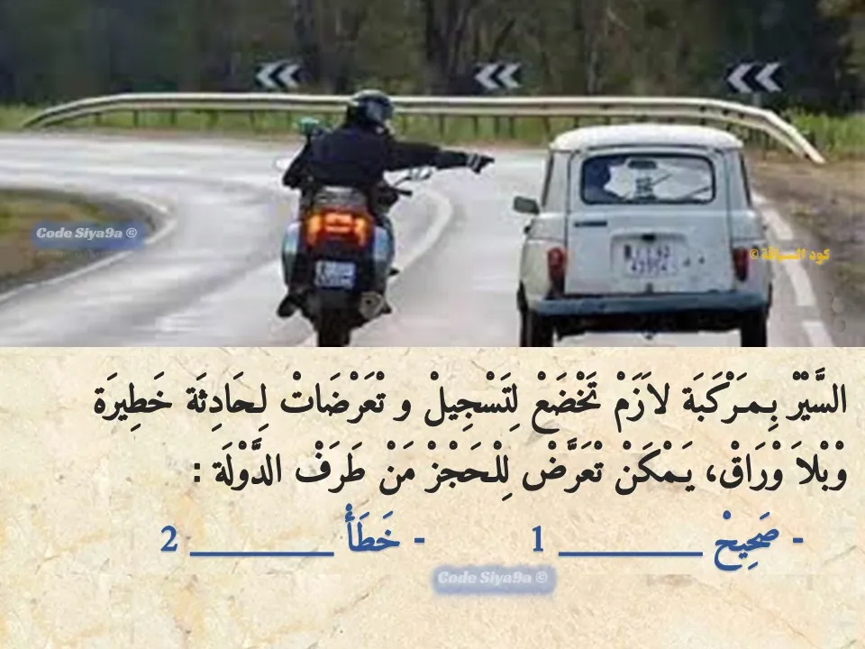
الجواب الصحيح: 1
تعتبر إعادة استخدام مركبة تعرضت لأضرار خطيرة:
إعادة استخدام كل مركبة خاضعة للتسجيل أصيبت بأضرار خطيرة دون تقديم تقرير خبرة بشأنها ودون المصادقة عليها.
4
الاستمرار في استخدام مركبة، على الطريق العمومية، خاضعة للتسجيل غير قابلة للإصلاحتقنيا والمسحوبة شهادة تسجيلها .
و غرامة من خمسة آلاف (5.000) إلى
ثلاثين ألف (30.000 درهم بالنسبة
للمركبات التي يقل وزنها الإجمالي المأذون به محملة عن 3.500 كيلوغرام؛ من عشرة آلاف (10.000) إلى ستين ألف (60.000) درهم بالنسبة للمركبات التي يساوي أو يفوق وزنها الإجمالي المأذون به محملة 3.500 كيلوغرام.
علاوة على ذلك، تأمر المحكمة بمصادرة المركبة لفائدة الدولة.
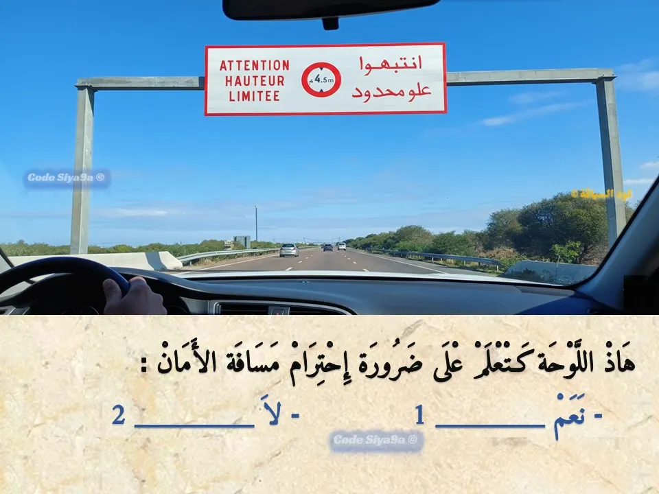
الجواب الصحيح: 2
- هذه اللوحة تحذر السائقين من وجود قنطرة أو نفق أو أي عائق آخر ارتفاعه محدود، وتهدف إلى منع مرور المركبات التي يتجاوز ارتفاعها 4.5 متر.
- بما أن اللوحة الموجودة في الصورة تتحدث عن "علو محدود" وليس عن "مسافة الأمان"، فإن الجواب على السؤال هو لا.
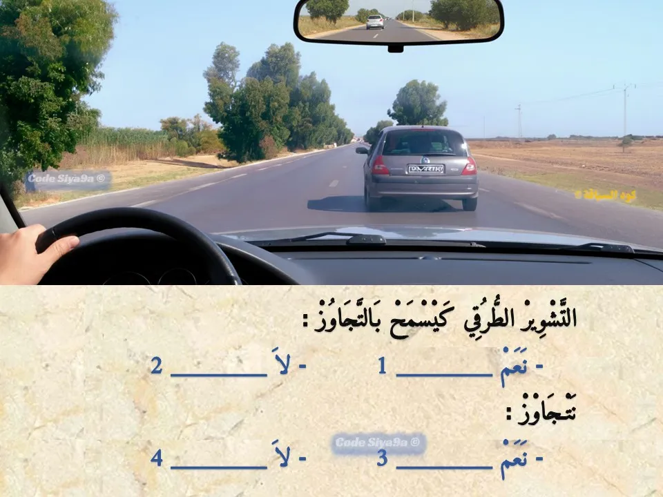
الجواب الصحيح: 1 و 3
في الصورة، نرى طريقًا مكونًا من مسارين، واحد للذهاب وآخر للإياب، وتفصل بينهما خطوط متقطعة بيضاء. هذه الخطوط المتقطعة تسمح بالتجاوز إذا كانت شروط التجاوز آمنة.
- بما أن الخطوط على الطريق متقطعة، فذلك يعني أنه يمكن التجاوز.
- في هذا الحالة الطريق امامي و خلفي فارغة لا يوجد مركبة قادمة من الخلف او الاتجاه المعاكس إذن، الإجابة على السؤال الثاني هي نعم.
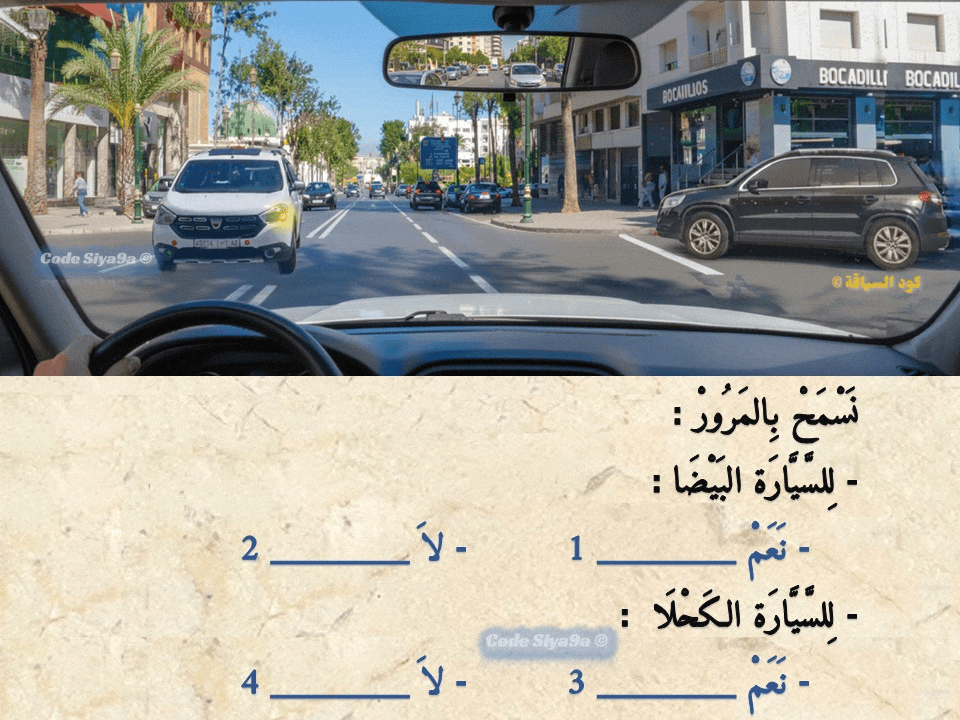
الجواب الصحيح: 2 و 4
لا يوجد شرح
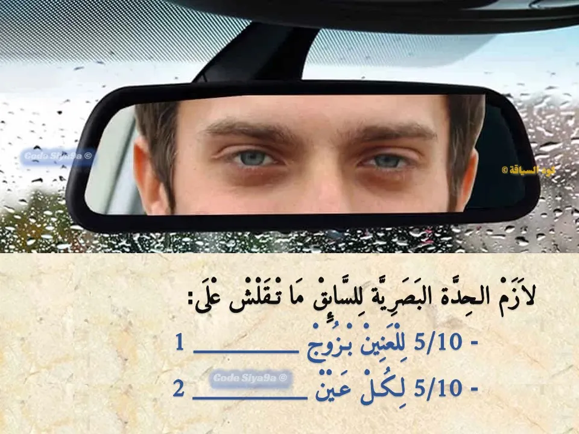
الجواب الصحيح: 1
الإجابة الصحيحة هي "5/10 للعينين بزوج". في معظم قوانين القيادة، يتم تحديد الحد الأدنى لحدة البصر المطلوبة للسائق، وعادةً ما يكون هذا التحديد بناءً على الرؤية بكلتا العينين معًا، أو حد أدنى معين لكل عين على حدة مع رؤية إجمالية أفضل. الخيار "5/10 للعينين بزوج" يعني أن مجموع حدة البصر لكلتا العينين يجب ألا يقل عن 5/10.
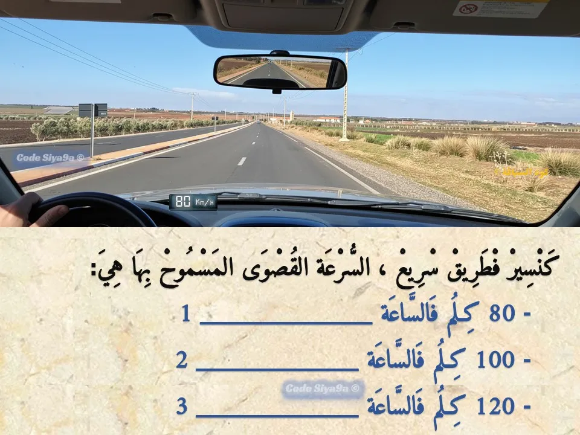
الجواب الصحيح: 2
تختلف السرعة القصوى حسب نوع الطريق:
الطريق السيار (الأوتوروت): السرعة القصوى هي 120 كلم/ساعة.
الطريق الوطني أو الجهوي: السرعة القصوى هي 100 كلم/ساعة، إلا إذا كانت هناك علامات تشير إلى سرعة أقل.
الطريق داخل التجمعات السكنية (المدينة): السرعة القصوى هي 60 كلم/ساعة، إلا إذا كانت هناك علامات تشير إلى سرعة أقل.
بما أن الصورة تُظهر طريقًا سريعًا خارج المدينة، فإن السرعة القصوى المسموح بها هي 100 كلم في الساعة.
إذن، الإجابة الصحيحة هي رقم 2: 100 كلم في الساعة.
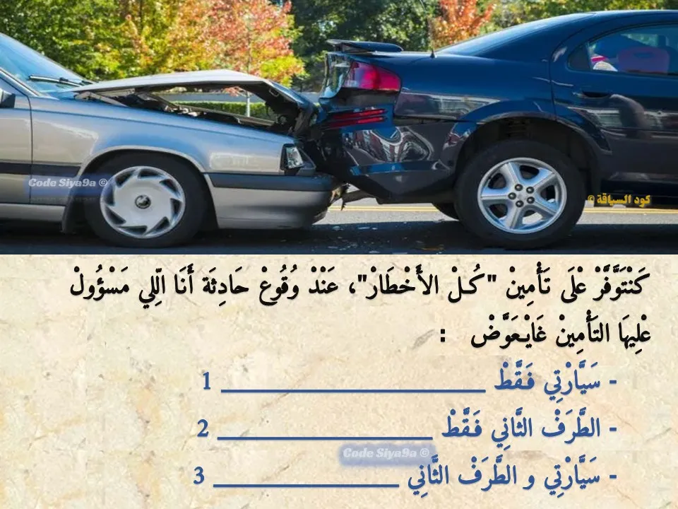
الجواب الصحيح: 3
"تأمين كل الأخطار" (Assurance Tous Risques) هو تأمين شامل يغطي الأضرار التي تلحق بسيارتك (المتسببة في الحادث) وكذلك الأضرار التي تلحق بالطرف الثاني، حتى لو كنت أنت المسؤول عن الحادث.
- بما أن السائق يمتلك تأمين "كل الأخطار"، فإن التأمين سيعوض الأضرار التي لحقت بسيارته وبسيارة الطرف الثاني.
إذن، الإجابة الصحيحة هي رقم 3: سيارتي والطرف الثاني.
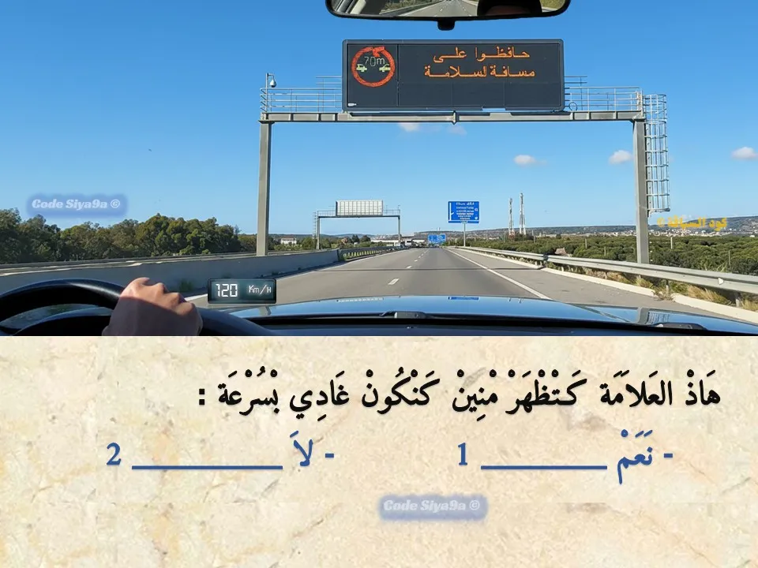
الجواب الصحيح: 2
العلامات الموجودة في الصورة هي علامات تذكيرية عامة وليست مرتبطة بشكل مباشر أو آلي بسرعة السائق. هي تظهر لتنبيه جميع السائقين على الطريق السيار بضرورة الحفاظ على مسافة أمان، بغض النظر عن السرعة التي يسيرون بها في تلك اللحظة.
لذلك، الإجابة الصحيحة هي: لا، ظهور هذه العلامة ليس مرتبطًا بسرعة السائق.
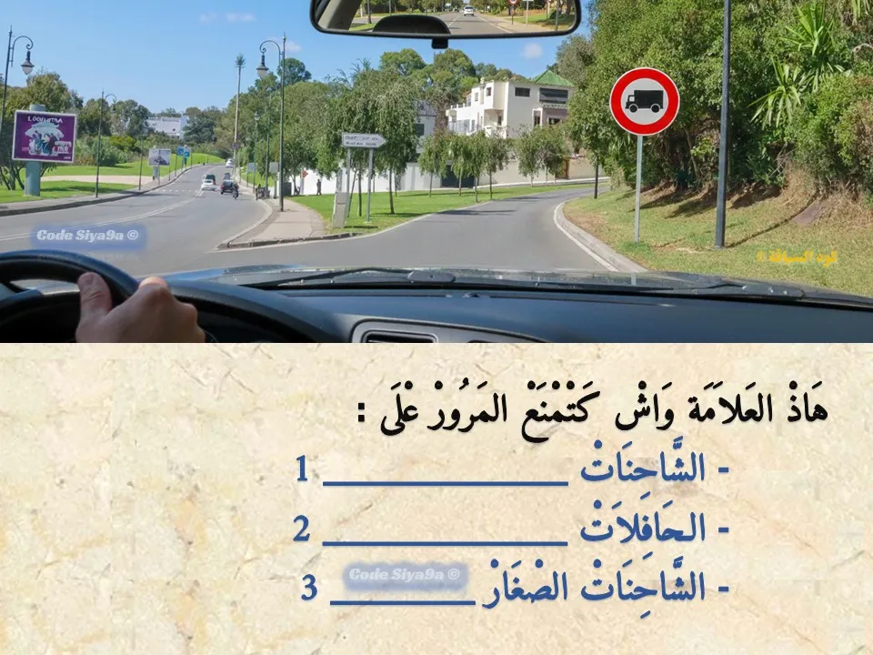
الجواب الصحيح: 1 و 3
في الصورة، تظهر علامة مرورية على شكل دائرة حمراء داخلها صورة شاحنة. هذه العلامة هي علامة منع، وتعني منع مرور الشاحنات.
- العلامة لا تميز بين الشاحنات الكبيرة والصغيرة، بل تمنع مرور جميع أنواع الشاحنات.
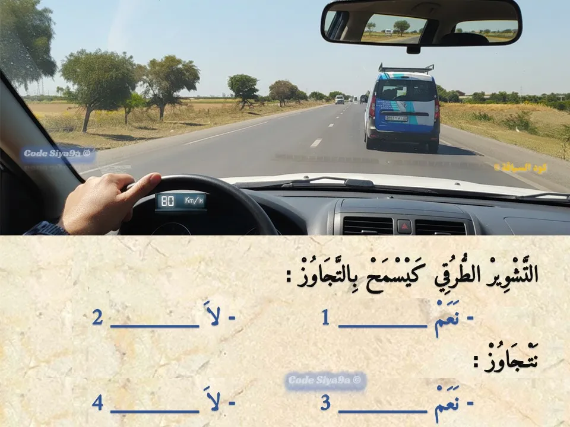
الجواب الصحيح: 1 و 4
في الصورة، نرى طريقًا مكونًا من مسارين، واحد للذهاب وآخر للإياب، وتفصل بينهما خطوط متقطعة بيضاء. هذه الخطوط المتقطعة تسمح بالتجاوز إذا كانت شروط التجاوز آمنة.
- بما أن الخطوط على الطريق متقطعة، فذلك يعني أنه يمكن التجاوز.
- في هذا الحالة الطريق امامي مركبة قادمة من الاتجاه المعاكس إذن، الإجابة على السؤال الثاني هي لا.
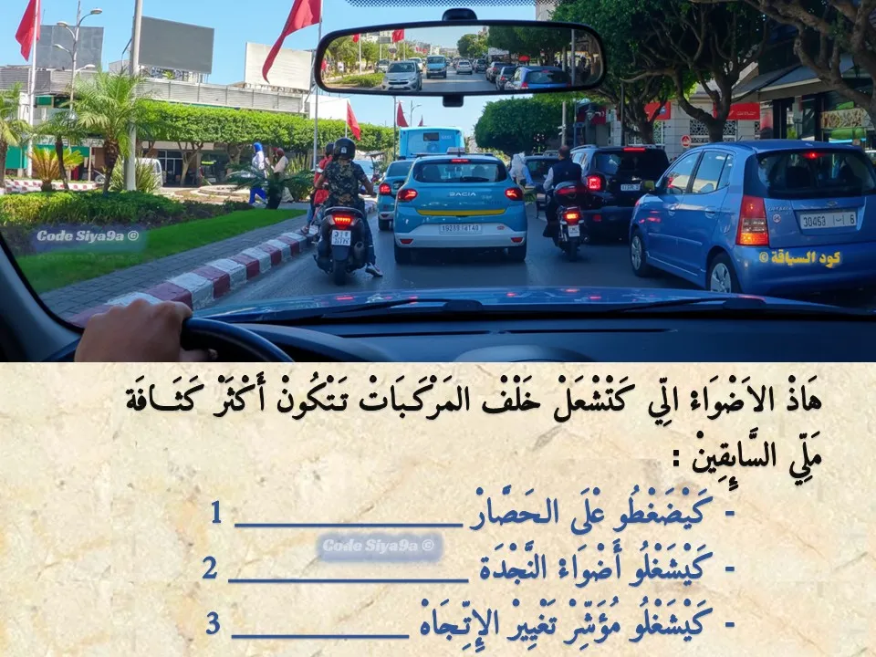
الجواب الصحيح: 1
هذه الأضواء التي تضيء خلف المركبات تكون أكثر كثافة عندما السائقين عندما يضغط السائق على دواسة الفرامل، تضيء الأضواء الخلفية بقوة أكبر للتنبيه بتخفيض السرعة أو التوقف. هذا هو الاستخدام الأساسي لأضواء الفرامل.
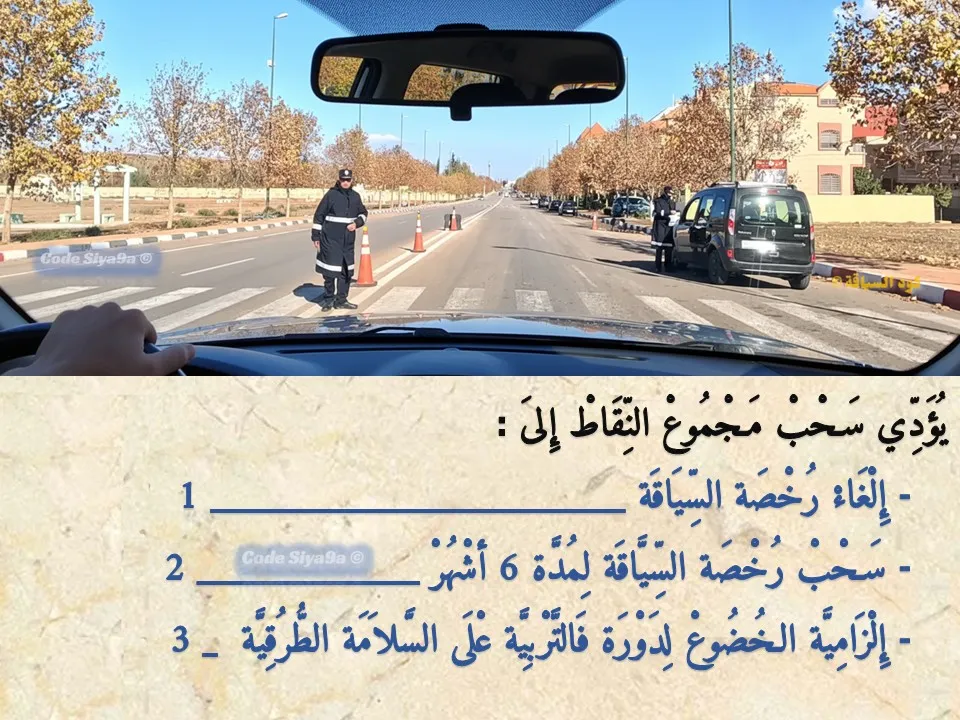
الجواب الصحيح: 1 و 3
الإجابة الصحيحة حسب مدونة السير في المغرب هي: إلغاء رخصة السياقة.
عندما يستنفد السائق كل النقاط من رصيد رخصته (20 نقطة خلال الفترة الاختبارية أو 30 نقطة لرخصة دائمة)، يتم إلغاء الرخصة.
- لا يمكن لصاحب الرخصة الملغاة على إثر فقدان مجموع رصيد النقط المخصصة لها، اجتياز الاختبارات مرة أخرى لأجل الحصول على رخصة سياقة جديدة، إلا بعد مضي مدة ستة (6) أشهر على الأقل من تاريخ تسليم رخصة السياقة الملغاة الخاصة به، وخضوعه لدورة في التربية على السلامة الطرقية في مؤسسة مرخص لها من قبل الوكالة الوطنية للسلامة الطرقية.
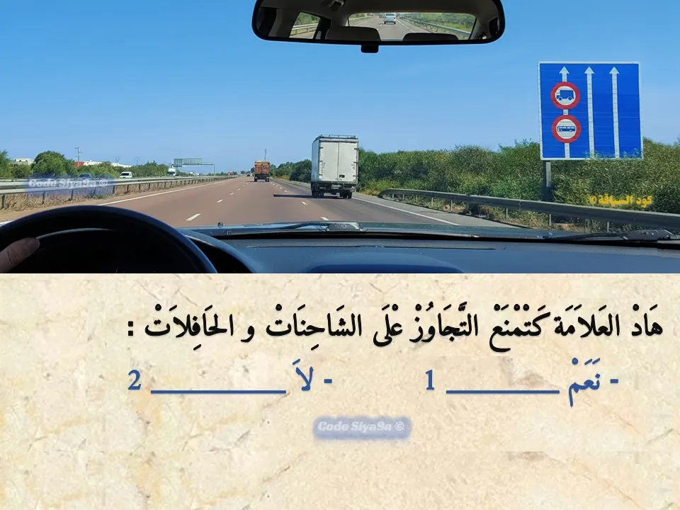
الجواب الصحيح: 2
هذه العلامة لا تعني أن التجاوز ممنوع على كل الطريق، بل تعني أن تجاوز الشاحنات والحافلات ممنوع في المسلك الأيسر فقط (المسلك رقم 3). المسلكان الآخران مسموح بهما لجميع المركبات.
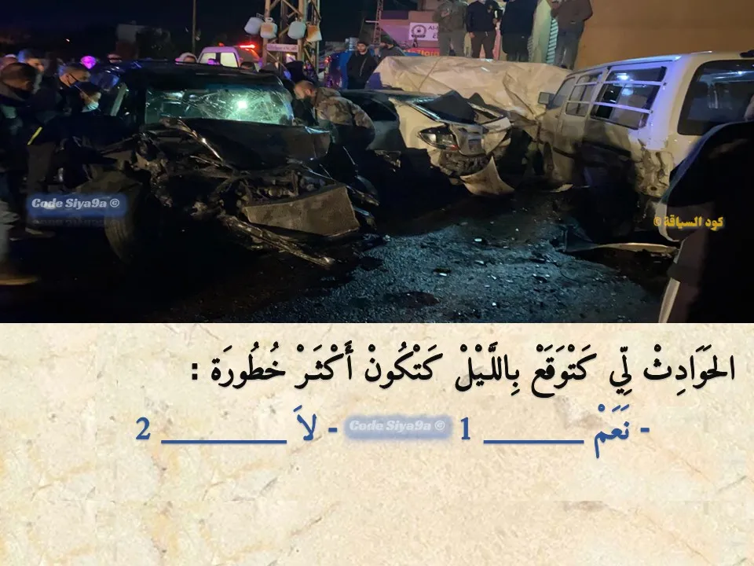
الجواب الصحيح: 1
بما أن الرؤية في الليل تكون محدودة، فإن السائق لا يرى المخاطر والمنعرجات بوضوح مثل النهار. كما أن ردود الفعل تكون أبطأ، والتقدير للمسافات يكون أصعب. كل هذه العوامل تزيد من خطورة الحوادث التي تقع ليلاً.
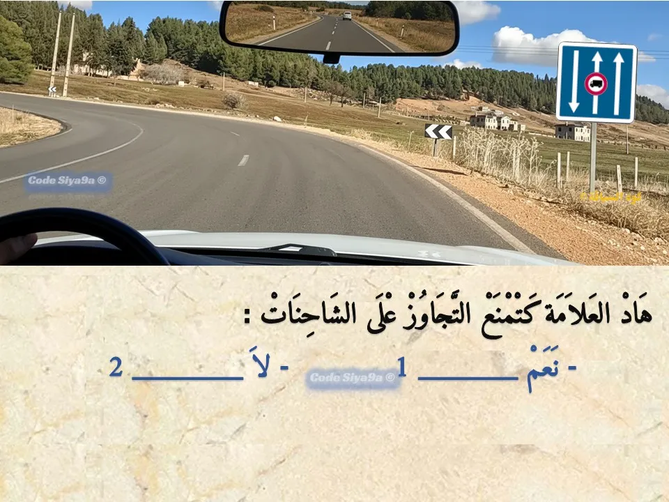
الجواب الصحيح: 1
كَتْعْلَن هَادِ الْعَلَامَة عَلَى عَدَدِ الْمَسَالِكَ
الْمُخَصَّصَة لِكُل اتجاه، وكَتْبِينَ التَّوْجِهات الْخَاصَة بكُل مسلك.
المُسْلَكُ التَّانِي مَمْنُوعٍ عَلَى جَمِيعِ الْمُرْكَبَات الْمُخَصَّصَةِ لِنَقْلِ الْبَضَائِع
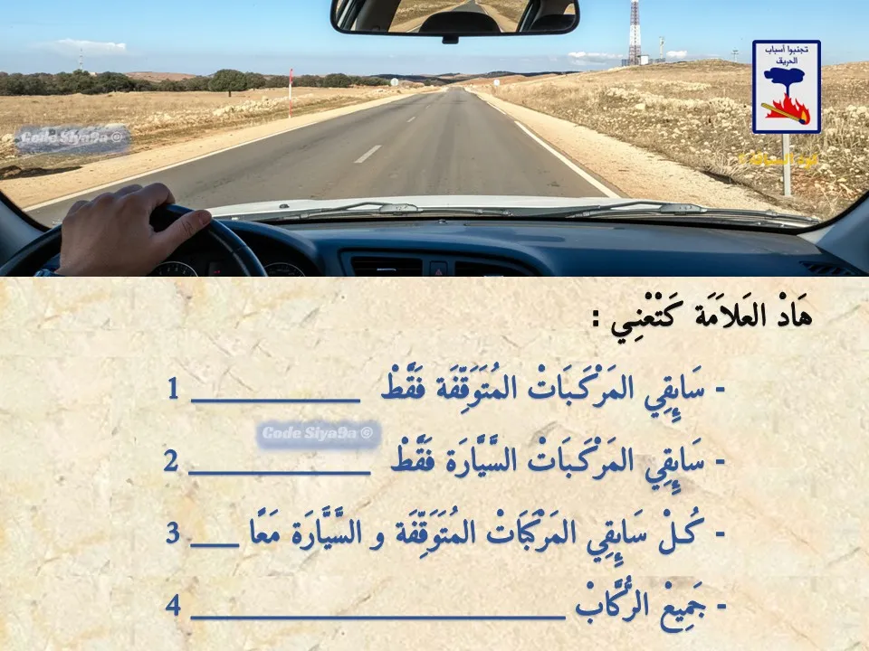
الجواب الصحيح: 3 و 4
اللوحة الإرشادية في الأعلى مكتوب عليها "تجنبوا أسباب الحريق". هذا تحذير للسائقين والركاب من القيام بأي تصرف قد يتسبب في اندلاع حريق، مثل رمي أعقاب السجائر أو أي مواد قابلة للاشتعال، خاصة في منطقة معرضة للرياح القوية التي يمكن أن تساهم في انتشار النيران.
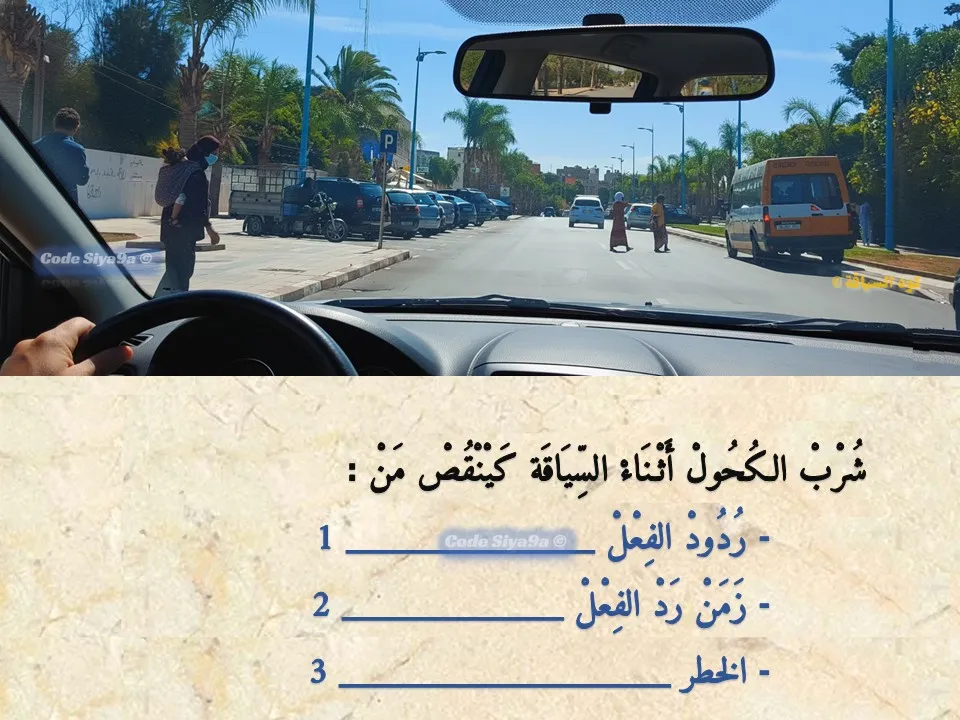
الجواب الصحيح: 1
أثير الكحول على السائق معروف، حيث يؤثر على الجهاز العصبي ويقلل من قدرة السائق على اتخاذ القرارات الصحيحة والسريعة.
- "نقص في ردود الفعل" يعني "تباطؤ أو تأخر ردود الفعل"، فإن الإجابة الصحيحة على السؤال هي:
1 - ردود الفعل.
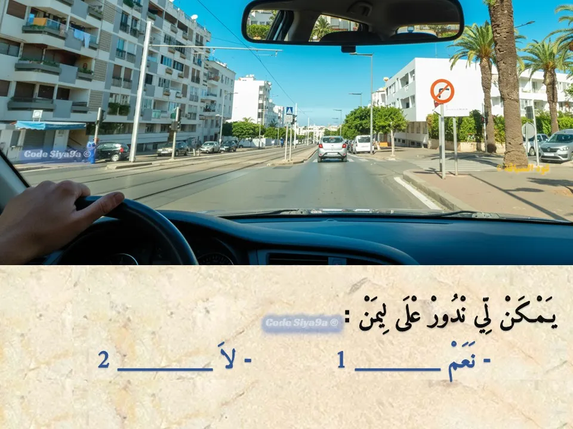
الجواب الصحيح: 2
العلامة تعني "ممنوع الانعطاف إلى اليمين" و بالتالي ما عنديش الحق ندور على ليمن .
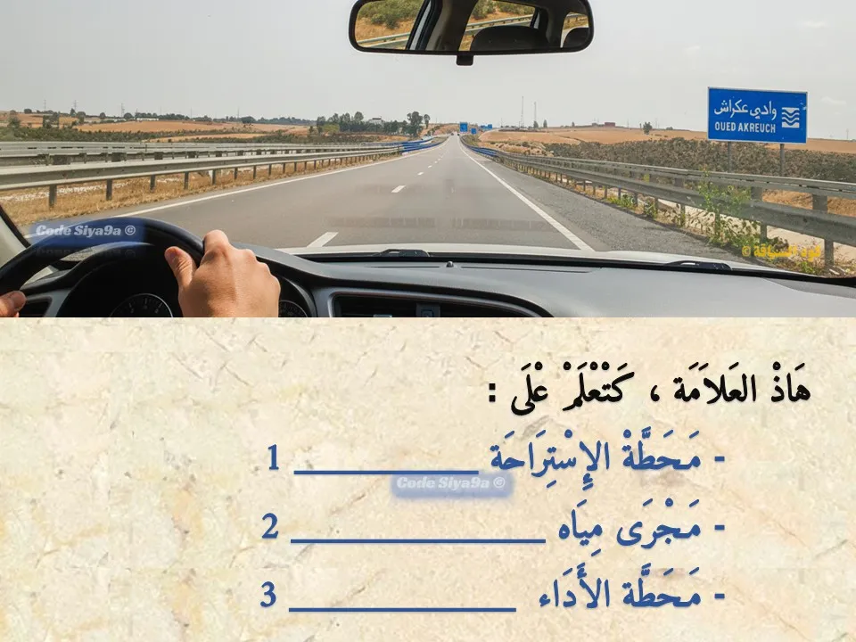
الجواب الصحيح: 2
العلامة لي فصورة مكتوبة فيها "وادى عكراش" (Oued Akreuch).
الواد هو واد، يعني مجرى ديال الما.الجواب الصحيح هو رقم 2، "مَجْرَى مِيَاه"، حيت "وادي" كتعني مجرى ديال الما.
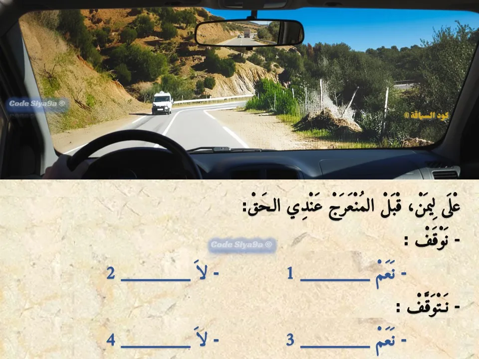
الجواب الصحيح: 1 و 3
القاعدة ديال منع الوقوف والتوقف قبل المنعرجات، القناطر، أو فوق قمم التلال، الهدف منها هو الحفاظ على السلامة العامة وضمان رؤية واضحة للسائقين.
لكن في هذا الحالة كاين مساحة كافية جنب الطريق باش توقف دون حجب الرؤية او عرقلت حركة السير .
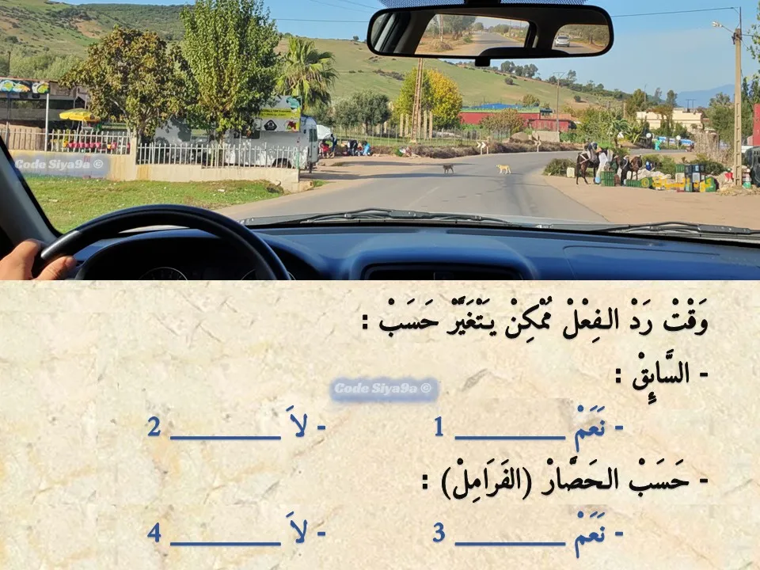
الجواب الصحيح: 1 و 4
وقت رد الفعل يعتمد بشكل أساسي على السائق (حالة التعب، تناول الأدوية، إلخ)، لذلك فإن الإجابة على السؤال الأول هي "نعم".
أما الفرامل (الحصار) فهي جزء من السيارة ولا تؤثر على وقت رد فعل السائق، بل تؤثر على مسافة الكبح. لذا، الإجابة على السؤال الثاني هي "لا".
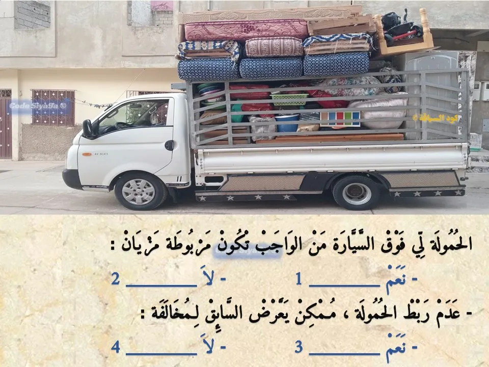
الجواب الصحيح: 1 و 3
أولاً، يجب أن تكون الحمولة على السيارة مربوطة جيدًا لضمان السلامة على الطريق ومنع سقوطها أو تحركها، مما قد يتسبب في حوادث.
ثانياً، عدم ربط الحمولة بشكل صحيح يعتبر مخالفة مرورية، ويعرض السائق للعقوبات القانونية.
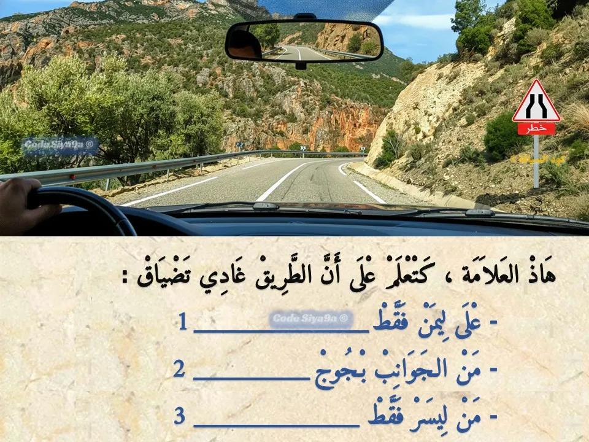
الجواب الصحيح: 2
كَتْعْلَن هَادِ الْعَلَامَةِ عَلَى خَطَر طرِيق ضَيِّقَة من الْجِهَتَين بجوج (ليمن وليسر).
من الوَاجِبِ عَلِيًّا نُلْتَزم أَقْصَى لِيمْن ، نُنْقَص من السُّرْعَة و نُطَبَّق قَوَاعِدِ الْأَسْبَقِيَة ومَمْنُوع عليا نتجاوز.
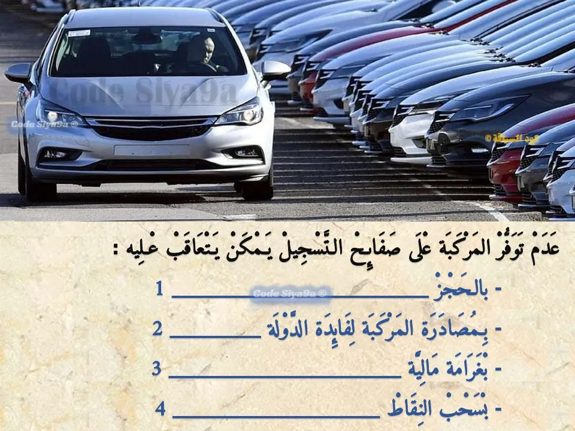
الجواب الصحيح: 1 و 2 و 3
كل سائق مركبة، خاضعة للتسجيل، لا تحمل صفائح التسجيل أو خاضعة لسند الملكية لا تحمل الرقم الترتيبي وكل مالك أو حائز لتلك المركبة استخدم أو سمح باستخدامها دون التوفر على الصفائح المذكورة مع غرامة من ألفين (2.000) إلى اثني عشر ألف (12.000) درهم إيداع المركبة المعنية في المحجز.
- يمكن كذلك المحكمة أن تأمر بمصادرة المركبة لفائدة الدولة.
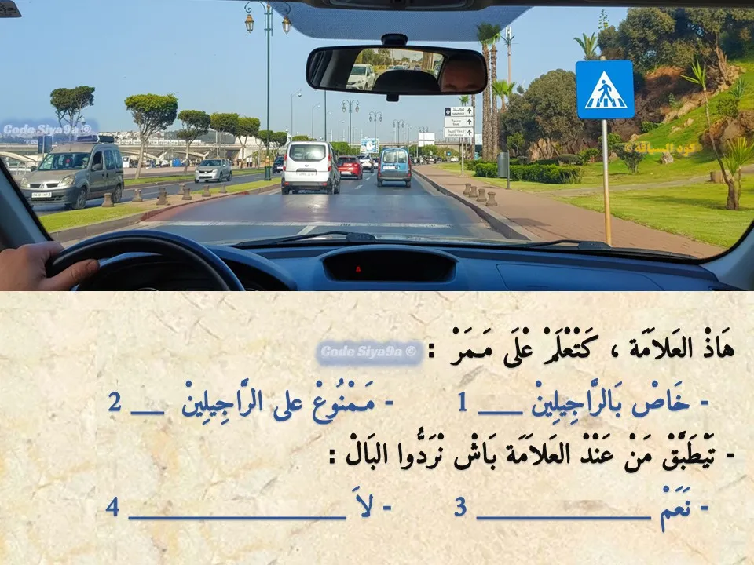
الجواب الصحيح: 1 و 3
أولاً، العلامة تشير إلى ممر خاص بالمشاة، لذلك الإجابة على الجزء الأول هي "نعم".
ثانياً، هذه العلامة هي علامة تحذيرية وإرشادية، وتطبق من عند وجودها، مما يعني أنه يجب على السائقين الانتباه واتخاذ الحيطة والحذر فور رؤيتها. لذلك، الإجابة على الجزء الثاني هي "نعم".
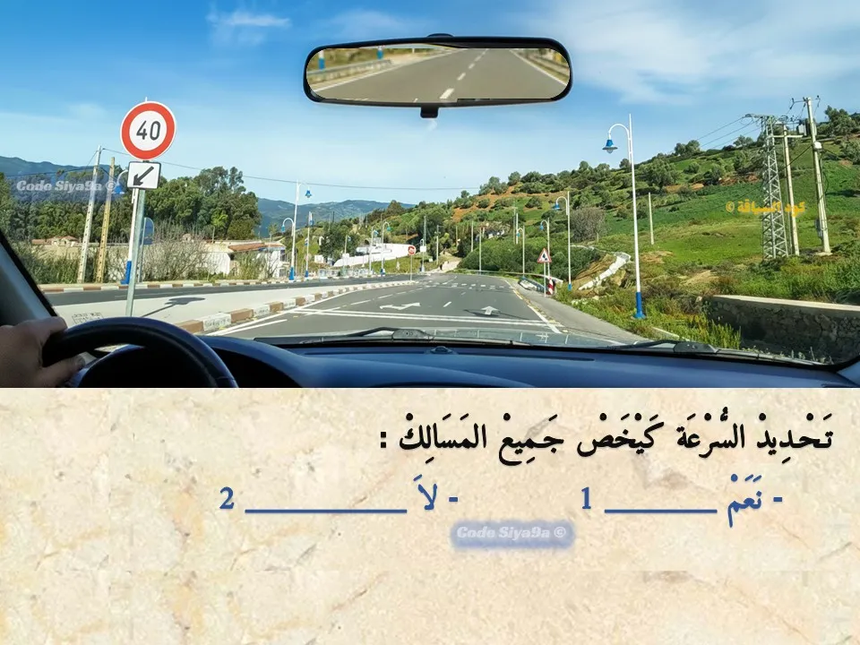
الجواب الصحيح: 2
هناك علامة تكميلية أسفل علامة تحديد السرعة "40". هذه العلامة التكميلية عبارة عن سهم يشير إلى اليسار ، يعني ان تحديد السرعة يخص المسلك اقصى اليسار ، و عبارة عن مسلك للتخزين بالنسبة للمركبات التي تغير الاتجاه الى اليسار.
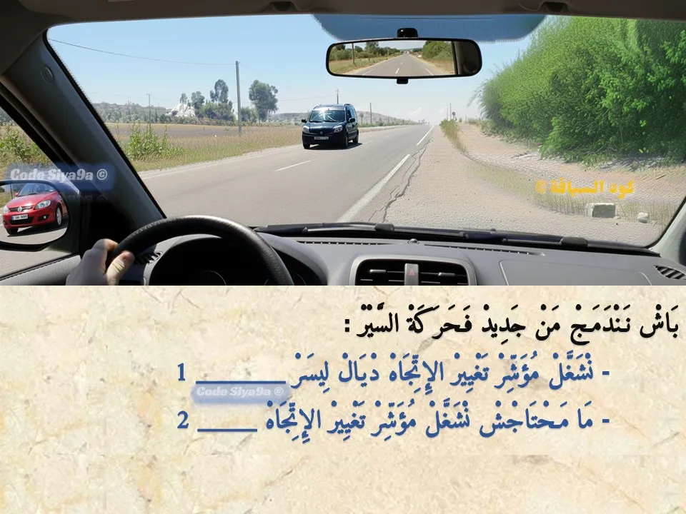
الجواب الصحيح: 1
الإجابة الصحيحة هي "نشغل مؤشر تغيير الإتجاه ديال ليسر". عند الاندماج في حركة السير من جانب الطريق أو من مكان توقف، يجب دائمًا استخدام مؤشرات الاتجاه (الغمازات) لإبلاغ السائقين الآخرين بنواياك، وذلك لضمان السلامة وتجنب الحوادث. في هذه الحالة، بما أن السيارة ستندمج في المسار الأيسر، يجب تشغيل مؤشر الاتجاه الأيسر.
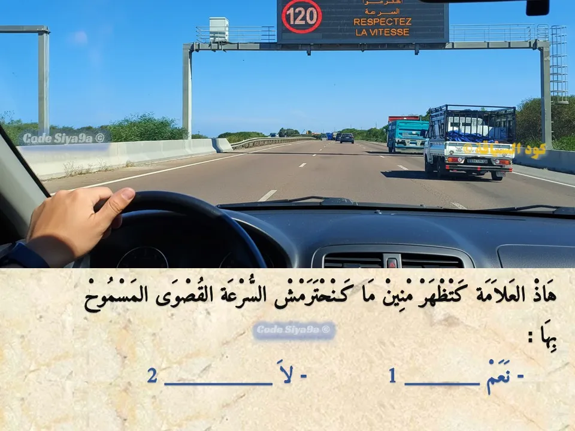
الجواب الصحيح: 2
العلامات الموجودة في الصورة هي علامات تذكيرية عامة وليست مرتبطة بشكل مباشر أو آلي بسرعة السائق. هي تظهر لتنبيه جميع السائقين على الطريق السيار بضرورة الحفاظ على احترم السرعة، بغض النظر عن السرعة التي يسيرون بها في تلك اللحظة.
لذلك، الإجابة الصحيحة هي: لا، ظهور هذه العلامة ليس مرتبطًا بسرعة السائق.
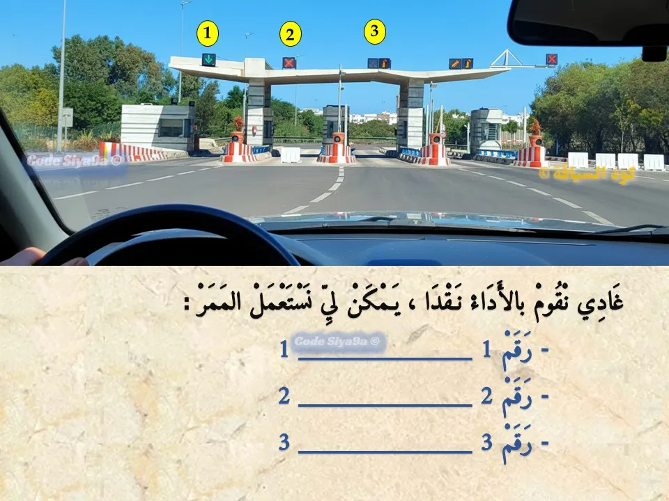
الجواب الصحيح: 1
الإجابة الصحيحة هي "رقم 1". المسار الذي يحتوي على سهم أخضر هو المسار المفتوح للدفع النقدي أو أي نوع من الدفع المسموح به في ذلك المسار. المسار رقم 2 مغلق، والمسار رقم 3 مخصص للدفع الإلكتروني و ليس للدفع النقدي.
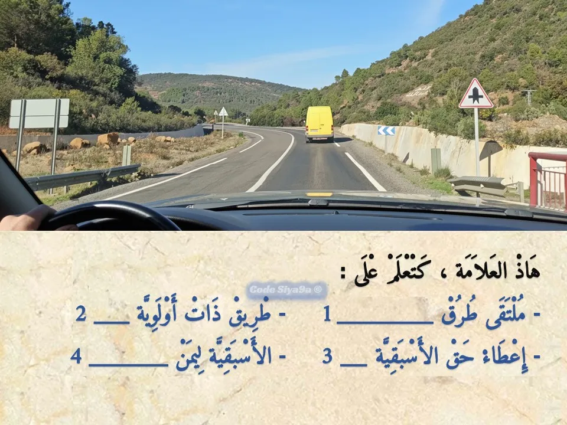
الجواب الصحيح: 1 و 2
الإجابة الصحيحة هي "ملتقى طرق" و "طريق ذات أولوية". هذه العلامة تدل على وجود تقاطع طرق، وتؤكد أنك تسير على طريق له الأولوية في هذا التقاطع.
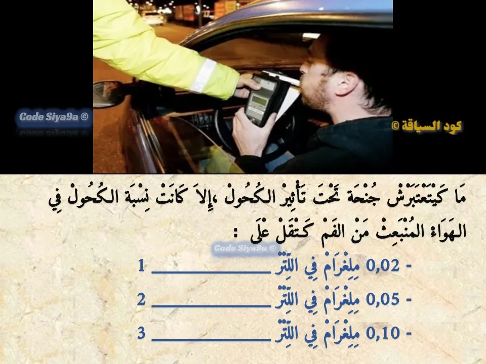
الجواب الصحيح: 3
بالنسبة للكحول في الهواء المنبعث من الفم: إذا كانت نسبة الكحول في الهواء المنبعث من فم السائق تساوي أو تتجاوز 0.1 ملليغرام لكل لتر من الهواء، فإنه يُمنع من القيادة.
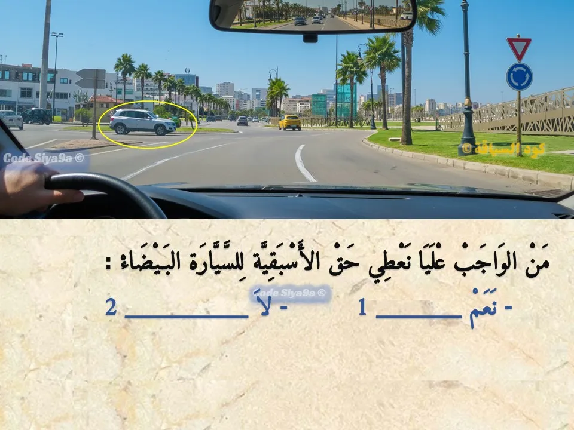
الجواب الصحيح: 1
بما أن هناك علامة "إعطاء حق الأسبقية" (المثلث المقلوب) مع علامة مدار، فهذا يعني أن يجب عليا إعطاء الأسبقية للسيارات القادمة من اليسار (التي هي بالفعل داخل الدوار).
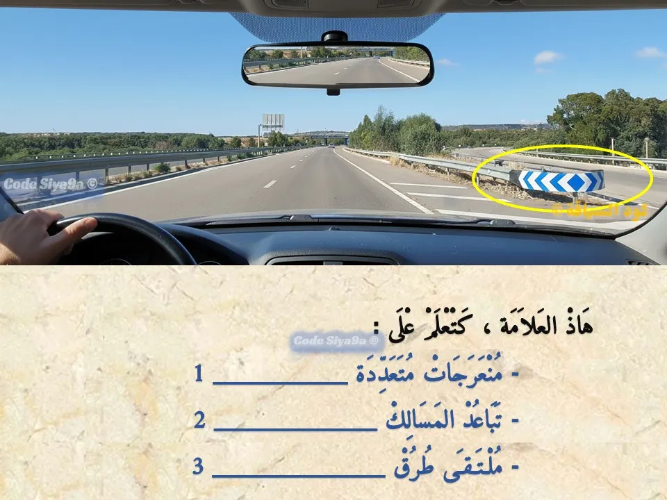
الجواب الصحيح: 2
الإجابة الصحيحة هي "تباعد المسالك". هذه العلامة (الشريط الأزرق والأبيض المتعرج) تُستخدم عادةً للإشارة إلى تباعد المسارات أو تغيير في مسار الطريق، خاصة عند الاقتراب من مخارج الطرق السريعة أو عند تفرع الطرق. لا تُشير هذه العلامة إلى تقاطع طرق
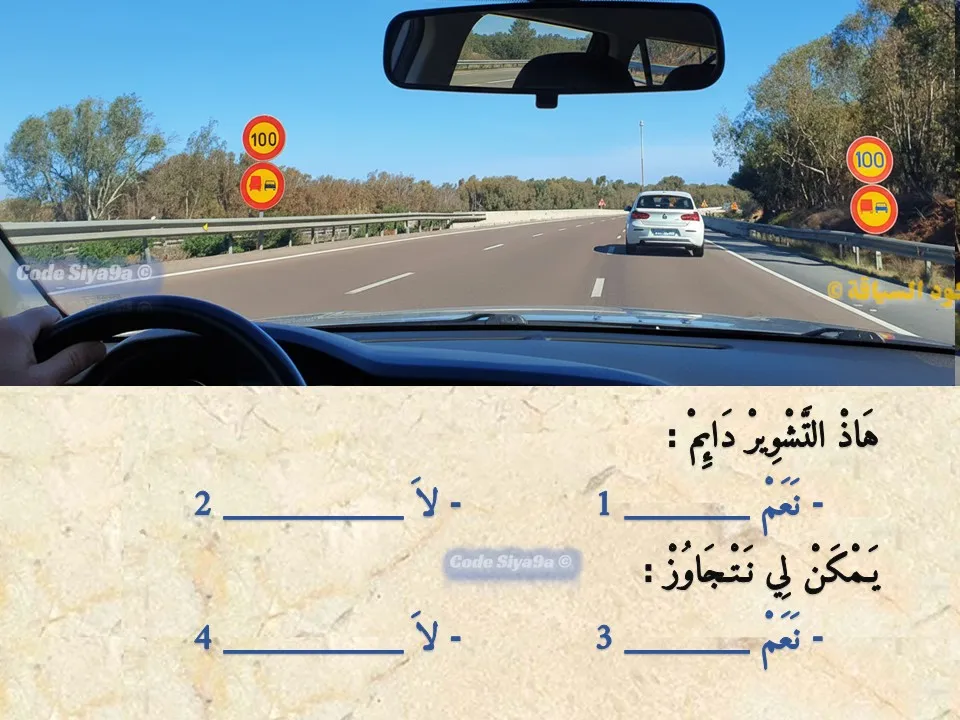
الجواب الصحيح: 2 و 3
اللافتات الصفراء هي التي تدل على أنها مؤقتة.
- التشوير الطرقي يمنع التجاوز على عربات نقل البضائع ، و حيت كنسوف سيارة فيمكن لي نتجاوز.
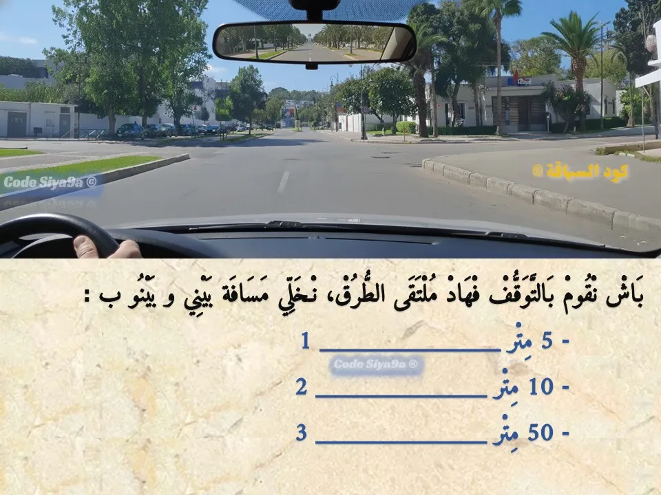
الجواب الصحيح: 1
الإجابة الصحيحة هي "5 متر". عند التوقف عند تقاطع طرق، يجب ترك مسافة كافية لضمان الرؤية للسائقين الآخرين وللسماح للمركبات الأخرى بالمرور بأمان. في معظم قوانين السير، يوصى بترك مسافة لا تقل عن 5 أمتار من التقاطع أو ممر المشاة.
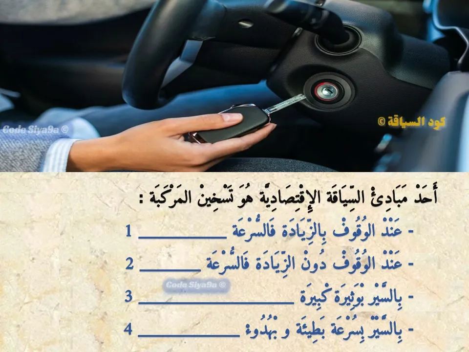
الجواب الصحيح: 4
الإجابة الصحيحة هي "بالسير بسرعة بطيئة وبهدوء". تسخين المحرك ببطء أثناء القيادة أفضل بكثير من تركه في وضعية الخمول (الوقوف)، كما أنه أفضل للمحرك من القيادة بسرعة عالية فورًا.
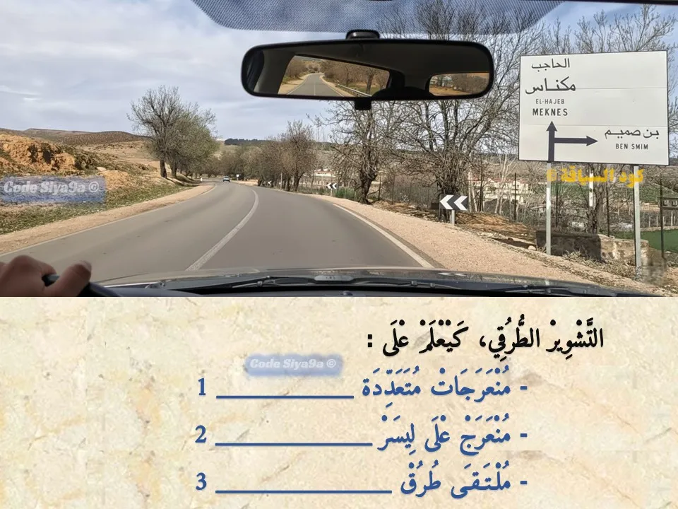
الجواب الصحيح: 2 و 3
✅ اللوحة بالابيض كتعلم على ملتقى طرق مع تحديد الاتجاهات .
✅ الاسهم باللون الازرق كتعلم على منعرج خطير على ليسر.
- ما كاين حتى علامة كتعلم على منعرجات متعددة
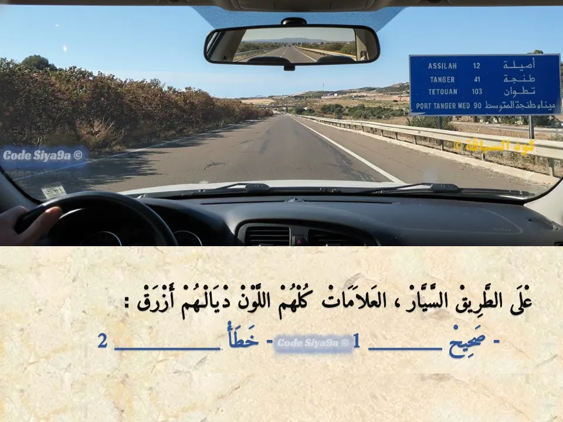
الجواب الصحيح: 2
الجواب الصحيح هو "خطأ"، لأن اللوحات الإرشادية على الطريق السيار زرقاء، ولكن هناك أنواع أخرى من اللافتات مثل لافتات المنع باللون الاحمر او الخطر كما يمكن ان تتكون من تشوير مؤقت.
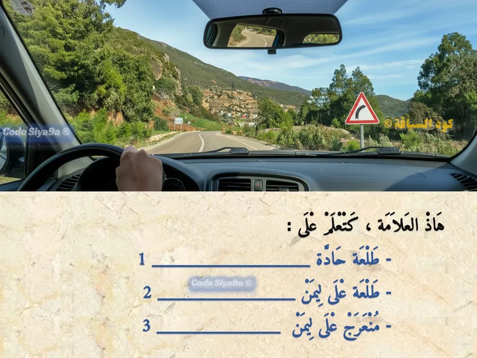
الجواب الصحيح: 3
كَتْعْلَن هَادِ الْعَلَامَة عَلَى خَطَرٍ وُجُود مُنْعَرَجٌ عَلَى لِيمْن.
مَن الوَاجِبِ عَلِيًّا نُحْتَرم تَحْدِيدُ السُّرْعَة تلتزم أَقْصَى ليمن ومَمْنُوع عليا نتجاوز.
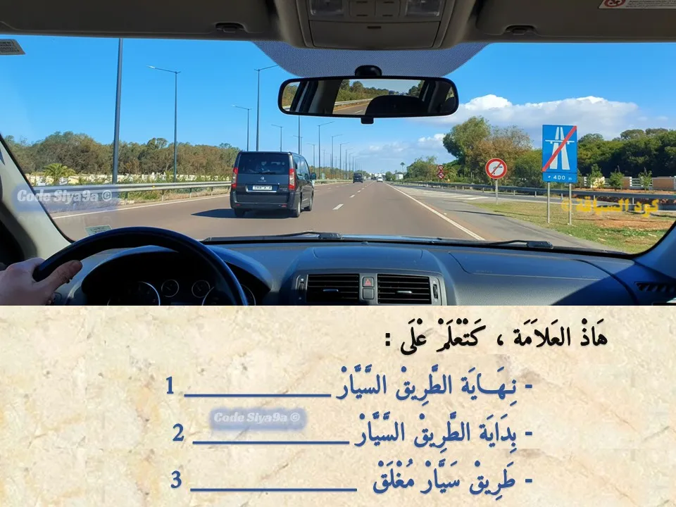
الجواب الصحيح: 1
العلامة الرئيسية التي تظهر بوضوح هي لوحة زرقاء مستطيلة عليها رسم لطريق سيار أبيض ومخطط بخطين أبيضين، وهذا الرسم مشطب بخط أحمر مائل. هذه العلامة تعني "نهاية الطريق السيار"،
1 - نهاية الطريق السيار: هذا هو الوصف الصحيح للعلامة الزرقاء المشطوبة.
2- بداية الطريق السيار: هذا يكون لوحة زرقاء بنفس الرسم لكن بدون الخط الأحمر.
3- طريق سيار مغلق: هذا عادة ما يشير إليه علامات أخرى أو حواجز.
لذلك، الإجابة الصحيحة هي رقم 1: نهاية الطريق السيار.